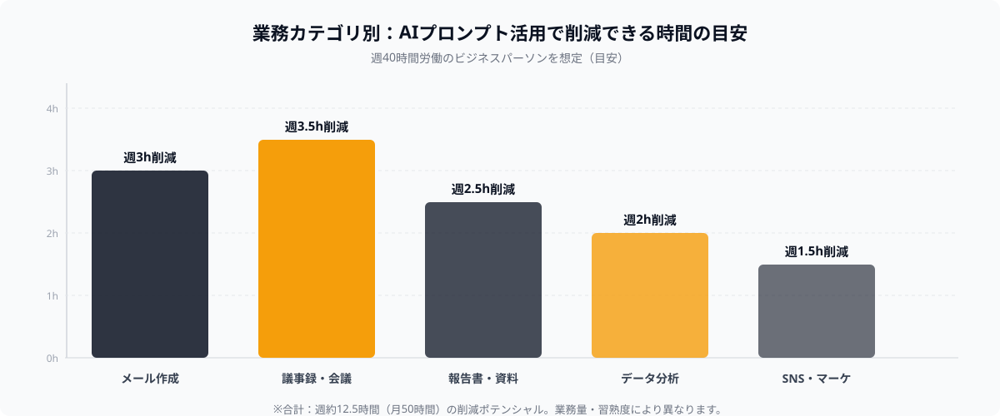
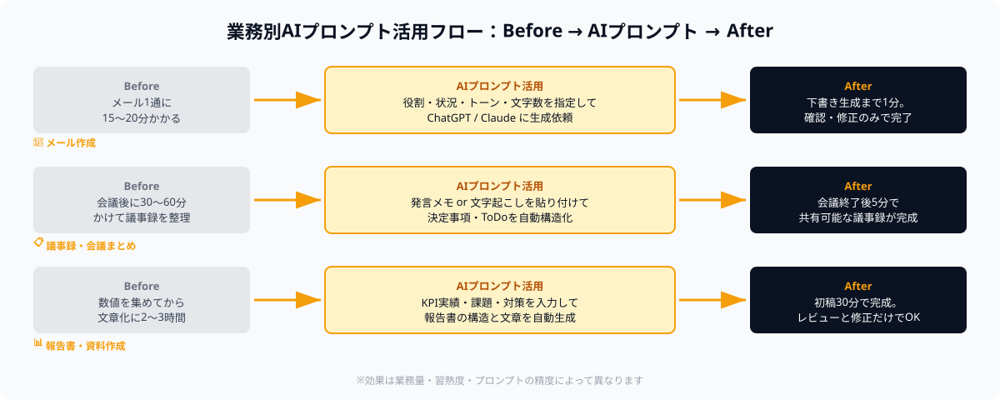

なぜプロンプトの質が業務効率化の成否を分けるのか
「ChatGPTを使ってみたが、出てくる回答がイマイチだった」——そう感じたことはありませんか？AIが期待通りの回答を出せないとき、多くの場合の原因はAIの性能ではなくプロンプトの書き方にあります。
プロンプトとは、AIへの指示文のことです。同じAIツールでも、プロンプトの書き方次第で出力の質は大きく変わります。具体的には次のような違いが生まれます。
- 曖昧な指示：「メールを書いて」→ 的外れな文章が生成される
- 具体的な指示：「相手は初回取引の法人担当者。見積もり送付後のお礼メールを、丁寧でビジネスライクなトーンで200字以内で書いて」→ 即使えるメールが生成される
この記事では、業務カテゴリ別にコピペしてすぐ使えるプロンプト30選を紹介します。ChatGPT・Claude・Geminiのいずれでも利用できます。角括弧（【】）の部分を自分の状況に置き換えてお使いください。

業務カテゴリ別：AIプロンプト活用で削減できる時間の目安
カテゴリ別プロンプト集：メール作成（8選）
ビジネスメールは頻度が高く、文章のクオリティが相手の印象に直結します。次のプロンプトをベースに、用途に合わせてカスタマイズしてください。
① 初回取引先へのご挨拶メール
あなたはプロのビジネスライターです。
初回取引先（【会社名】の【担当者名】様）への挨拶メールを書いてください。
背景：【自社の事業内容を1行】。今後の取引に期待している旨を伝える。
トーン：丁寧・ビジネスライク。文字数：200字以内。
② 見積もり送付後のお礼・確認メール
見積書送付後のお礼・ご確認メールを書いてください。
・送付日：【日付】
・見積書の概要：【概要を1行】
・確認依頼：ご不明点があればご連絡くださいとひと言添える
・文字数：150字以内、件名も含めて出力してください。
③ 納期延長のお詫びメール
納期遅延のお詫びメールを作成してください。
・当初納期：【日付】
・新しい納期：【日付】
・遅延理由：【理由を1行（詳細は書かなくてよい）】
・再発防止の言及：あり
・トーン：誠実・謝罪の意を明確に。文字数250字以内。
④ 社内への業務報告メール（週次）
週次業務報告メールを書いてください。
・今週の主な成果：【箇条書きで3〜5項目を入力】
・課題・懸念点：【あれば記載】
・来週の予定：【箇条書きで2〜3項目】
読み手は直属の上司。簡潔で読みやすい形式にしてください。
⑤ 会議日程調整メール（候補日提示）
会議の日程調整メールを作成してください。
・目的：【会議の目的を1行】
・候補日時：【例：6月20日13時〜、6月21日10時〜、6月22日終日】
・所要時間：【例：1時間程度】
・場所またはオンライン：【記載】
件名・本文ともに出力してください。
⑥ クレーム対応メール（初回回答）
顧客からのクレームに対する初回回答メールを書いてください。
・クレームの内容：【概要を1行】
・対応状況：現在原因調査中
・今後の対応：【例：3営業日以内に改めてご連絡する】
トーン：誠実・丁寧。相手の感情を受け止める文章にしてください。
⑦ 提案書送付のご案内メール
提案書を添付して送るメールを作成してください。
・提案内容：【タイトルや概要を1行】
・アピールポイント：【提案の強みを2〜3点】
・次のアクション：【例：来週のお打ち合わせでご説明させてください】
件名・本文ともに出力してください。
⑧ 契約更新のご案内メール
契約更新のご案内メールを書いてください。
・現契約の満了日：【日付】
・更新内容：【変更点があれば記載、なければ「内容変更なし」と記載】
・手続き締切：【日付】
・担当窓口：【担当者名・連絡先】
丁寧かつ簡潔にまとめてください。
カテゴリ別プロンプト集：議事録・会議まとめ（6選）
会議後の議事録作成は時間がかかる割に付加価値が低い業務の代表格です。AIに任せれば、発言の羅列から構造化された議事録を数秒で生成できます。
① 発言メモから議事録を自動生成
以下の会議メモを元に議事録を作成してください。
【会議メモをここに貼り付け】
出力形式：
1. 会議概要（日時・参加者・目的）
2. 決定事項
3. 議論の要点
4. ToDoと担当者・期限
読み手は参加者以外も含むため、背景がわかるよう補足を加えてください。
② 音声文字起こしから議事録を作成
以下は会議の文字起こしテキストです。重複・フィラー語（えー、あのー等）を除去し、
議事録として整理してください。
【文字起こしテキストをここに貼り付け】
出力形式：決定事項・課題・アクションアイテム（担当者付き）の3セクションで出力。
③ 議事録の英語訳・グローバル共有版作成
以下の日本語議事録を、英語圏のステークホルダー向けに英訳してください。
専門用語は日本語のまま（括弧で補足）、ビジネス英語のトーンで。
【日本語議事録をここに貼り付け】
④ 1on1ミーティングのまとめ作成
1on1ミーティングのまとめを作成してください。
・話したこと：【箇条書きで入力】
・メンバーの状況・懸念：【記載】
・合意したこと・次のアクション：【記載】
上司としての振り返りコメントも1〜2行添えてください。
⑤ 会議前のアジェンダ作成
【会議名】のアジェンダを作成してください。
・目的：【例：Q3の施策方針決定】
・参加者：【役職と人数】
・所要時間：【例：60分】
各トピックに時間配分と担当者を付け、意思決定が必要な項目は明示してください。
⑥ 複数回会議のサマリーレポート作成
以下の複数回の議事録を統合し、プロジェクトの進捗サマリーを作成してください。
【議事録①をここに貼り付け】
【議事録②をここに貼り付け】
出力：経緯・現在の状況・残課題・次のマイルストーンの4項目で整理してください。
カテゴリ別プロンプト集：報告書・資料作成（6選）
報告書や提案資料は、情報を収集したあとの「構造化と文章化」に最も時間がかかります。AIはこの部分を大幅に短縮できます。

業務カテゴリ別：プロンプトの使いどころ（Before → AIでの自動化 → After）
① 月次業務報告書の作成
月次業務報告書を作成してください。
・対象月：【年月】
・主要KPI実績：【項目と数値を箇条書き】
・目標達成・未達の状況：【記載】
・課題と来月の対策：【記載】
経営層への報告用として、要点を簡潔にまとめた形式にしてください。
② 新規事業・企画の提案書骨子作成
新規企画の提案書の骨子を作成してください。
・企画名：【タイトル】
・背景・課題：【解決したい課題を1〜2行】
・提案内容：【概要を2〜3行】
・期待効果：【定量・定性で記載】
・必要リソース：【概算で記載】
投資対効果を明確にしたストーリー構成で出力してください。
③ 競合調査レポートの構造化
以下の競合情報をもとに、競合調査レポートを作成してください。
【競合A：特徴・強み・弱み・価格帯を箇条書き】
【競合B：同上】
【競合C：同上】
出力形式：比較表＋各社の特徴まとめ＋自社への示唆（3点）
④ プロジェクト振り返りレポート（KPT形式）
プロジェクト振り返りレポートをKPT形式で作成してください。
プロジェクト概要：【タイトルと期間を1行】
Keep（よかったこと）：【箇条書きで入力】
Problem（課題・失敗）：【箇条書きで入力】
Try（次回改善策）：上記Problemから導いて3点提案してください。
⑤ プレスリリースの下書き作成
プレスリリースの下書きを作成してください。
・発表内容：【例：新サービスのリリース、提携発表、受賞など】
・会社名・概要：【記載】
・発表日：【日付】
・読み手：業界メディア・一般消費者
5W1Hを押さえた標準的なプレスリリース形式で出力してください。
⑥ 長文ドキュメントの要約
以下の文書を300字以内で要約してください。
要点を優先度順に箇条書きで3〜5点まとめ、最後に「結論：」を1文で添えてください。
【要約したい文章をここに貼り付け】
カテゴリ別プロンプト集：データ分析・表作成（5選）
数字の読み解きや表の整理は、ChatGPTのCode Interpreter（Advanced Data Analysis）やClaudeのファイル添付機能を使うとさらに強力です。テキストだけでも十分に活用できます。
① 数値データのインサイト抽出
以下の数値データから重要なインサイトを抽出してください。
【データをここに貼り付け（表・CSV・数値の羅列など）】
分析観点：前月比・前年同期比・異常値の有無・トレンド
出力形式：上位3インサイトを箇条書きで、各インサイトに根拠となる数値を添えてください。
② アンケート結果の分析・まとめ
以下のアンケート結果を分析し、レポートを作成してください。
【アンケートの設問と回答数・割合をここに貼り付け】
出力：全体傾向の要約（200字）＋設問別のポイント＋改善提言3点
③ Excel風の比較表を作成
以下の情報をもとに比較表を作成してください。
比較対象：【A・B・C（例：サービスA・B・C）】
比較軸：【例：価格・機能・サポート・契約形態・導入実績】
Markdown形式の表で出力してください。
④ 売上データの前年比レポート文章化
以下の売上データをもとに、経営会議向けの報告文を作成してください。
今月：【金額と主要商品・地域】
前月：【金額】
前年同月：【金額】
増減の要因仮説を2〜3点添え、今後の見通しも1段落で記述してください。
⑤ 優先度マトリクスの作成
以下のタスクリストを、重要度×緊急度のマトリクスで分類してください。
【タスクを箇条書きで貼り付け】
出力：第1象限（重要・緊急）〜第4象限（重要でない・緊急でない）に分類し、
各象限に推奨アクションを1行添えてください。
カテゴリ別プロンプト集：SNS・マーケティング文章（5選）
マーケティング用のコピーやSNS投稿文はトーン調整が難しく、人手では時間のかかる作業です。AIに初稿を作らせて人間が仕上げるスタイルが最も効率的です。
① X（Twitter）投稿文の複数案生成
X（Twitter）投稿文を3パターン作成してください。
・発信テーマ：【例：新サービスのリリース告知】
・ターゲット読者：【例：中小企業の経営者・Webディレクター】
・含めたいキーワード：【例：スポット外注、固定費ゼロ】
各140字以内。パターンA（数字で訴求）・B（課題提起）・C（ストーリー系）で出力。
② LP（ランディングページ）のキャッチコピー案
LPのファーストビュー用キャッチコピーを5案作成してください。
・サービス概要：【1〜2行で説明】
・ターゲット：【誰向けか】
・一番伝えたいベネフィット：【例：採用なしで開発が進む、固定費ゼロで始められる】
各案20字以内。刺さる順にランキング付けしてください。
③ ブログ記事の導入文・タイトル案生成
ブログ記事のタイトル案3本と導入文を作成してください。
・記事テーマ：【例：スポット外注の活用方法】
・メインキーワード：【例：スポット外注 やり方】
・想定読者：【例：初めて外注を検討する中小企業の担当者】
タイトルはSEOを意識したクリック率重視のもの。導入文は300字以内で読者の悩みに共感してください。
④ メールマガジン（ステップメール）の文章作成
ステップメール（登録後1通目）の文章を作成してください。
・サービス名・概要：【記載】
・読者が登録した経緯：【例：無料資料DL、セミナー参加など】
・1通目の目的：信頼構築＋次のアクション（相談予約）への誘導
・文字数：400字以内。件名も含めて出力。
⑤ 社内向け新サービス説明文（Slack・社内Wiki向け）
新しい社内ツール・サービスの導入説明文を作成してください。
・ツール名：【記載】
・目的・解決する課題：【記載】
・使い始め方（3ステップ以内）：【記載】
・問い合わせ先：【担当者名・連絡先】
Slack投稿またはNotionページ向けに、親しみやすいトーンで200字以内にまとめてください。
プロンプトをさらに磨く3つのコツ
コピペプロンプトで9割の業務は対応できますが、さらに精度を上げたい場合は以下の3点を意識してください。
コツ①：役割（ペルソナ）を最初に与える
「あなたは〇〇の専門家です」と冒頭で役割を設定すると、出力のトーンと専門性が一段上がります。「あなたはビジネスライター」「あなたはデータアナリスト」のように、タスクに合った役割を指定しましょう。
コツ②：出力形式を明示する
「箇条書きで」「Markdown形式で」「200字以内で」「件名と本文を分けて」など、出力の形式を具体的に指定するだけで使い勝手が大きく変わります。形式の指定がないと、AIは自由な形式で出力するため、後の編集が増えます。
コツ③：フィードバックで繰り返し改善する
一発で完璧な出力を求めず、「もっと簡潔に」「3点目の内容をもう少し具体的にして」と対話形式で修正を依頼するのが効果的です。プロンプトを毎回ゼロから書くより、対話で磨いていく方が時間的に優れています。
💡 プロンプト活用をさらに自動化したい方へ
定型プロンプトをツール化（SlackBot・社内Webアプリ・Notion連携など）すれば、チーム全員が同じ品質のAI出力を活用できます。ANKENでは、こうした社内AIツールをスポット開発で依頼できます。
まとめ
この記事では、業務カテゴリ別に今すぐ使えるプロンプトを30選紹介しました。
- メール作成（8選）：挨拶・お礼・お詫び・報告・日程調整・クレーム・提案・更新
- 議事録・会議まとめ（6選）：メモから生成・文字起こし・英訳・1on1・アジェンダ・複数回サマリー
- 報告書・資料作成（6選）：月次報告・提案書・競合調査・KPT・プレスリリース・要約
- データ分析・表作成（5選）：インサイト抽出・アンケート分析・比較表・売上レポート・優先度マトリクス
- SNS・マーケティング文章（5選）：Twitter・LP・ブログ・メルマガ・社内説明文
まずは日常業務で最も時間のかかっているカテゴリから1〜2本試してみてください。プロンプトを自分の業務に合わせて育てていくことで、AIはより強力な業務パートナーになります。
さらに一歩進んで、これらのプロンプトを社内ツールとして自動化したい場合は、ANKENのスポット開発をご活用ください。
AIプロンプトを社内ツールに自動化する
定型プロンプトをSlackBot・Webアプリ・Notion連携に組み込んで、チーム全体の業務効率化を実現。ChatGPT・Claude API対応エンジニアへスポットで依頼できます。固定費ゼロ・週末対応可能。
👉 無料でスポット依頼を相談する
要件が固まっていなくてもOK。まず相談するだけでもOKです。
← ブログ一覧に戻る